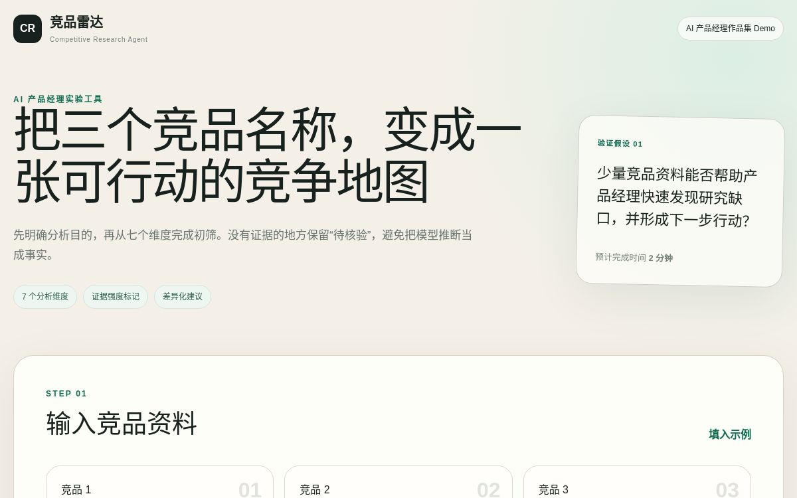

AI 产品经理完整项目
把“能回答”做成
可解释、可接管、可闭环的 AI 客服
从用户研究、竞品与需求优先级出发，完成产品架构、MVP PRD、AI 能力协议、质量评估、Guardrails、数据闭环与商业化设计，并用 Vibe Coding 做出可直接体验的产品 Demo。
CASE / 01
AI CUSTOMER SERVICE
核心产品判断：证据不足时不猜测，用户需要时无障碍转人工，所有失败都要进入可复现的改进闭环。
01 / 项目概览
一条从问题到验证的完整产品链路
作品不是文档集合，而是一组相互约束的产品决策：研究决定范围，范围决定架构，架构决定 AI 能力和安全边界，Evals 决定能否上线，数据闭环决定产品能否持续变好。
传统机器人“答了”，企业仍不知道是否可靠
高峰排队、知识频繁更新、跨系统查询和复杂售后同时发生。没有来源的答案、低置信度硬答和断裂的人工交接，会把效率问题变成信任问题。
可信问答 + 人工接管 + 运营闭环
AI 仅依据当前租户的有效知识和授权只读数据回答；证据不足、冲突或越权时拒答或转人工；人工修正与失败会话进入 Bad Case 队列。
先把高频链路做深，不追求大而全
首版覆盖 Web/H5、知识问答、订单物流只读查询、转人工、工单与运营看板；不做电话、复杂 BI，也不开放退款、改地址等高风险写操作。
用户洞察范围定义AI 能力Evals灰度与回流
02 / 研究与定义
先找到真实任务，再决定 AI 应该做什么
研究聚焦购买决策者、日常使用者与业务负责人，避免只从“模型能做什么”倒推功能。
A
客服主管
赵敏，34 岁
需要在大促高峰稳定分担咨询，并能向管理层证明 AI 的质量、人效和成本价值。
关键任务：看见质量、及时介入、持续复盘B
客服专员
刘芳，27 岁
日均处理 120—150 个会话，希望接管复杂问题时不用重新问一遍，也不用频繁切换系统。
关键任务：快速接管、完整上下文、顺畅闭环C
店铺老板
陈宇，38 岁
关注上线成本、问题解决率和续费回报，希望用有限团队覆盖夜间与促销高峰。
关键任务：低门槛上线、可量化 ROI、风险可控需求收敛
25 条需求经过 ICE 排序，首版锁定 12 条 P0
最高优先级不是“更聪明地回答”，而是用户一句话转人工、自动携带会话摘要、批量导入知识、答案展示来源，以及客服可自主选择接入指定会话。
下载用户研究与需求清单 ↓01一句话一键转人工ICE 900
02自动摘要并携带历史上下文ICE 720
03批量知识导入与状态反馈P0
04答案来源与更新时间P0
竞品研究
5 家产品 × 19 项能力矩阵
Udesk智齿科技网易七鱼美洽腾讯云 TCCC
共同能力
全渠道、人工坐席、机器人、工单和数据看板已经成为标准配置。
未被充分解决
回答为什么可信、何时必须转人工、如何把 Bad Case 变成下一版评估样本。
差异化切入
不比“回答数量”，优先做来源可追溯、接管顺畅和质量闭环。
03 / 产品方案
用六层架构把模型能力装进可控业务流程
产品端、AI 引擎、业务集成和安全底座共同决定体验。模型只负责理解、检索、生成、判断与摘要，权限和真实业务动作留在确定性系统中。
产品核心
AI 智能客服 MVP
可解释 · 可接管 · 可闭环
用户端Web/H5 问答来源展示转人工工单进度
客服工作台待接队列AI 摘要订单物流工单处理
管理后台知识库会话监控Bad Case效果看板
AI 引擎NLPRAG生成风险判断摘要
业务集成渠道 API订单物流工单系统
安全底座RBAC租户隔离字段遮蔽审计日志
MVP PRD
6 个功能域，覆盖 12 条 P0
- 企业初始化与渠道接入
- 知识导入与版本管理
- 可信 AI 问答与来源展示
- 转人工、摘要与待接队列
- 订单物流与工单闭环
- 运营、Bad Case 与看板
产品红线
“不会做”也是产品能力
- 无有效证据，不生成事实性答案
- 显式转人工请求优先于继续问答
- 首版工具全部只读
- 跨租户、注入和敏感信息必须阻断
- 退款、取消、改地址等写操作交给人工
AI 能力需求
8 项能力都有输入、输出、指标和降级路径
A01知识解析A02问题理解A03检索重排A04证据生成
A05风险判断A06工具编排A07会话摘要A08Bad Case 回流
04 / Evals 与安全
把“感觉变好”变成可复现的质量证据
围绕基础、复杂、边界、攻击和兜底五类场景构建 30 条 Eval Set，使用固定四维 Rubric 做基线、诊断、优化与同集回归。
V0 总均分3.33/5通过率 17%
V1 总均分4.62/5通过率 93%
严重安全失败5 → 0同一评估集回归
最重要的复盘
Prompt 优化不能替代产品能力
复杂场景仍受真实多订单和子包裹工具缺失影响。模型可以给出正确流程，却无法完成数据核验。下一步必须接入只读沙箱、建立盲测集，并同时评估延迟、成本和人工接管成功率。
数据边界：以上结果来自固定模拟沙箱和同集回归，用于展示评估方法，不代表真实线上效果。V1 规则来自这 30 条失败样本，存在测试集过拟合风险。
身份与租户校验、长度与频率、PII 识别、内容安全和 Prompt 注入检测。
可信知识准入、工具白名单、参数 Schema、最小权限、超时和幂等。
事实与证据对齐、敏感信息遮蔽、拒答与转人工、决策和版本可追溯。
05 / 数据闭环
让每一个失败案例都有发现、修正和验证记录
看板只告诉团队发生了什么；数据闭环还要回答为什么、该改什么，以及改完是否真的有效。
01采集轨迹输入、输出、证据、工具与结果
→02触发 Bad Case规则、反馈、人工与抽样
→03治理与标注隔离、脱敏、去重、人工复核
→04根因分流Prompt、知识、工具、交互或模型
→05离线与灰度回归集、盲测集、A/B 与护栏
→06沉淀复用关闭案例并加入永久回归集
产品原则
根因不属于模型时，不用微调掩盖
知识过期修知识，订单状态错误修工具，转人工入口不可见修交互，跨租户访问修权限。只有理解、生成或泛化问题才进入模型优化。
06 / Vibe Coding
把产品假设做成任何人都能打开的 Demo
为了验证“少量竞品资料能否帮助产品经理快速发现研究缺口，并形成下一步行动”，独立完成了竞品分析 Agent：输入三个竞品，即可生成七维矩阵、共同缺口、机会点、差异化建议和待核验清单。
- 工作流输入校验 → Prompt 编排 → 豆包 API → JSON 校验 → 报告渲染
- 技术栈React、TypeScript、Cloudflare Workers、火山方舟 API
- 真实性规则资料不足标记“待核验”，不把推断包装成事实

打开可交互产品 ↗
07 / 全部交付物
10 份可下载、可追溯的项目证据
网页负责讲清产品逻辑，原始文件保留完整需求、表格、Prompt、评估用例和设计细节，便于面试时深入展开。
用户研究与需求清单
3 个画像、用户旅程、25 条需求 ICE 排序、12 条 P0 与 MVP 指标。
DOCX 下载 ↓竞品分析报告
5 家代表产品、19 项功能矩阵、AI 局限、商业模式与差异化机会。
DOCX 下载 ↓产品架构设计
产品功能架构、信息架构、核心用户流程和首版边界。
Markdown 下载 ↓MVP 产品需求文档
正常流、异常流、验收、埋点、Guardrails、数据闭环与商业化补充。
DOCX 下载 ↓AI 能力需求文档
8 项能力的输入输出协议、数据要求、评估指标、安全和可观测要求。
DOCX 下载 ↓Eval Set 与评估报告
30 条用例、V0/V1 输出、四维评分、分类对比和失败诊断。
XLSX 下载 ↓Evals 实战记录
完整记录评估对象、沙箱、基线、失败案例、优化规则与局限。
DOCX 下载 ↓LLM-as-Judge 评分器
准确性、完整性、友好度、安全性四维 Rubric 与 JSON 输出约束。
Markdown 下载 ↓数据闭环设计方案
采集、筛选、标注、根因分流、验证、灰度和责任机制。
DOCX 下载 ↓Vibe Coding 学习笔记
从验证假设、MVP 收缩到 API 调用和真实操作验收的方法记录。
DOCX 下载 ↓END / NEXT STEP
查看方法，也可以直接体验结果
完整材料保留了从判断、取舍到验证的过程；可交互 Demo 用于展示把产品假设快速做成可用原型的能力。